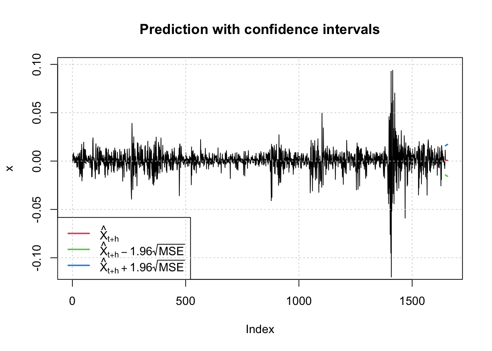
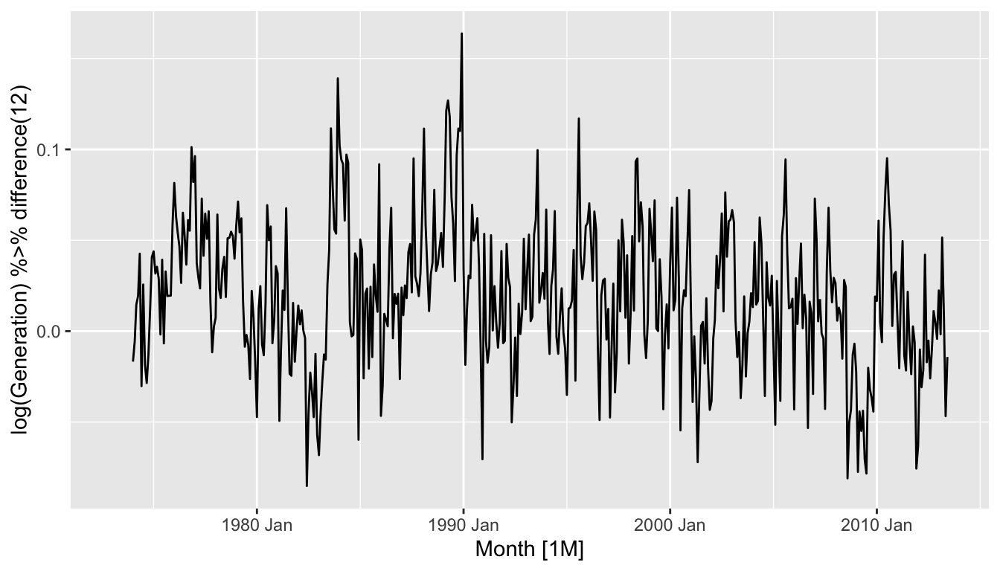

Chapter 2 ARIMA models
- AR: autoregressive (lagged observations as inputs)
- I: integrated (differencing to make series stationary)
- MA: moving average (lagged errors as inputs)
An ARIMA model is rarely interpretable in terms of visible data structures like trend and seasonality. But it can capture a huge range of time series patterns.
2.1 Stationarity and differencing
2.1.1 Stationarity
Definition
If \(\{y_t\}\) is a stationary time series, then for all \(s\), the distribution of \((y_t,\dots,y_{t+s})\) does not depend on \(t\).
A stationary series is:
- roughly horizontal
- constant variance
no patterns predictable in the long-term
- Transformations help to stabilize the variance.
For ARIMA modelling, we also need to stabilize the mean.
Identifying non-stationary series
- time plot.
- The ACF of stationary data drops to zero relatively quickly
- The ACF of non-stationary data decreases slowly.
- For non-stationary data, the value of r1 is often large and positive.

2.1.2 Differencing
- Differencing helps to stabilize the mean.
- The differenced series is the change between each observation in the original series: \(y'_t = y_t - y_{t-1}\).
- The differenced series will have only \(T-1\) values since it is not possible to calculate a difference \(y_1'\) for the first observation.
2.1.3 Second-order differencing
Occasionally the differenced data will not appear stationary and it may be necessary to difference the data a second time:
\[y''_{t} = y'_{t} - y'_{t - 1}\] \[= (y_t - y_{t-1}) - (y_{t-1}-y_{t-2})\] \[= y_t - 2y_{t-1} +y_{t-2}.\]
- \(y_t''\) will have \(T-2\) values.
- In practice, it is almost never necessary to go beyond second-order differences.
2.1.4 Seasonal differencing
A seasonal difference is the difference between an observation and the corresponding observation from the previous year.
\[y'_t = y_t - y_{t-m}\]
where \(m=\) number of seasons.
- For monthly data \(m=12\).
- For quarterly data \(m=4\).
Example : Electricity production



- Seasonally differenced series is closer to being stationary.
- Remaining non-stationarity can be removed with further first difference.
If \(y'_t = y_t - y_{t-12}\) denotes seasonally differenced series, then twice-differenced series is
\[y^*_t = y'_t - y'_{t-1}\] \[= (y_t - y_{t-12}) - (y_{t-1} - y_{t-13})\] \[= y_t - y_{t-1} - y_{t-12} + y_{t-13}.\]
When both seasonal and first differences are applied \(\dots\) - it makes no difference which is done first—the result will be the same. - If seasonality is strong, we recommend that seasonal differencing be done first because sometimes the resulting series will be stationary and there will be no need for further first difference.
It is important that if differencing is used, the differences are interpretable.
2.1.5 Interpretation of differencing
- first differences are the change between one observation and the next;
- seasonal differences are the change between one year to the next.
But taking lag 3 differences for yearly data, for example, results in a model which cannot be sensibly interpreted.